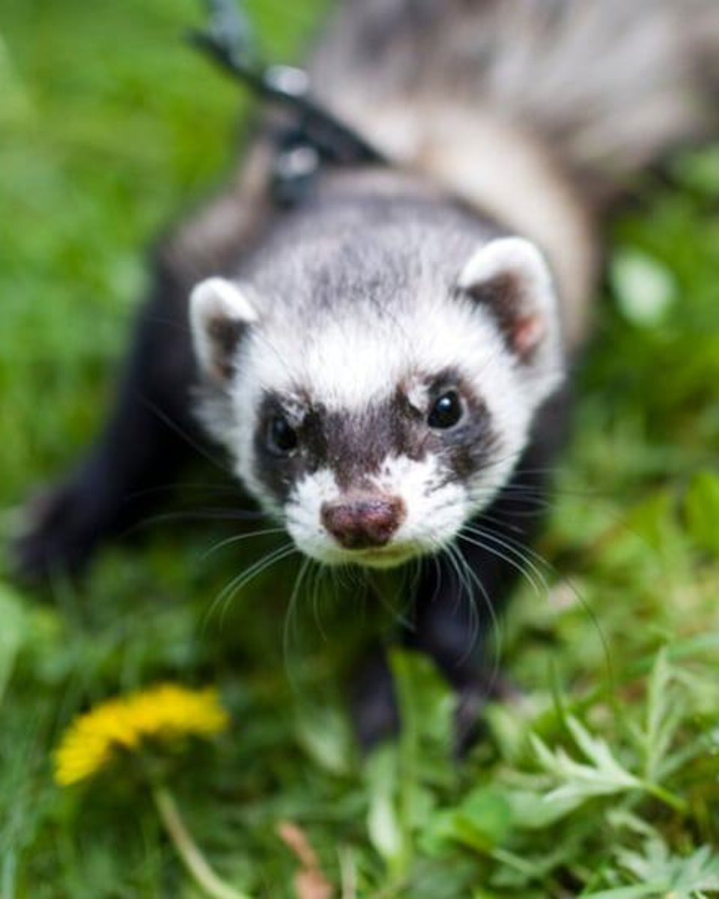
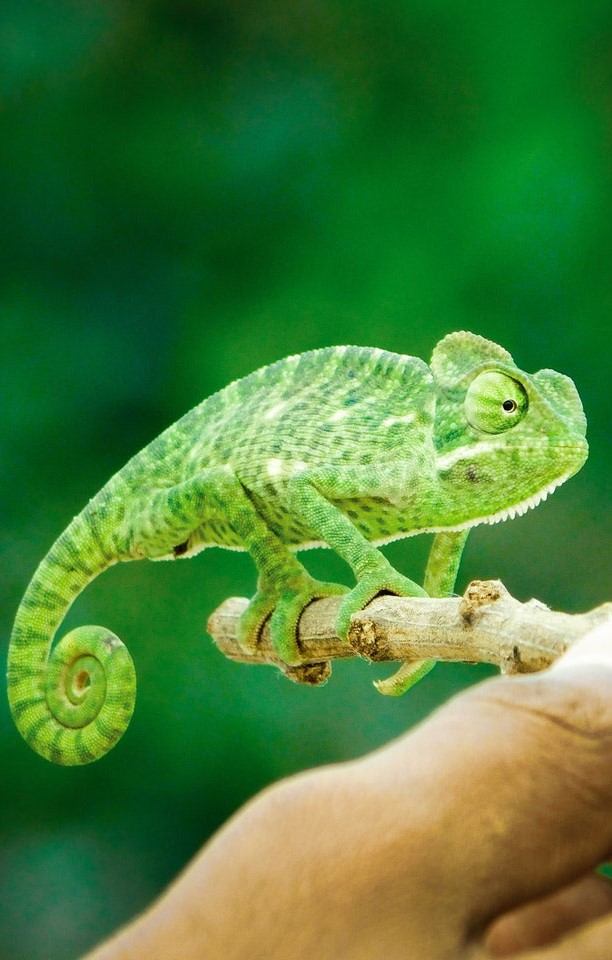
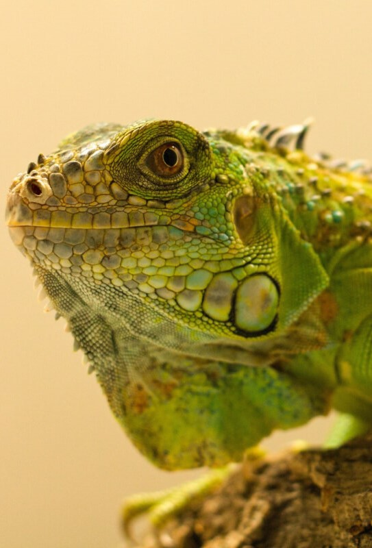
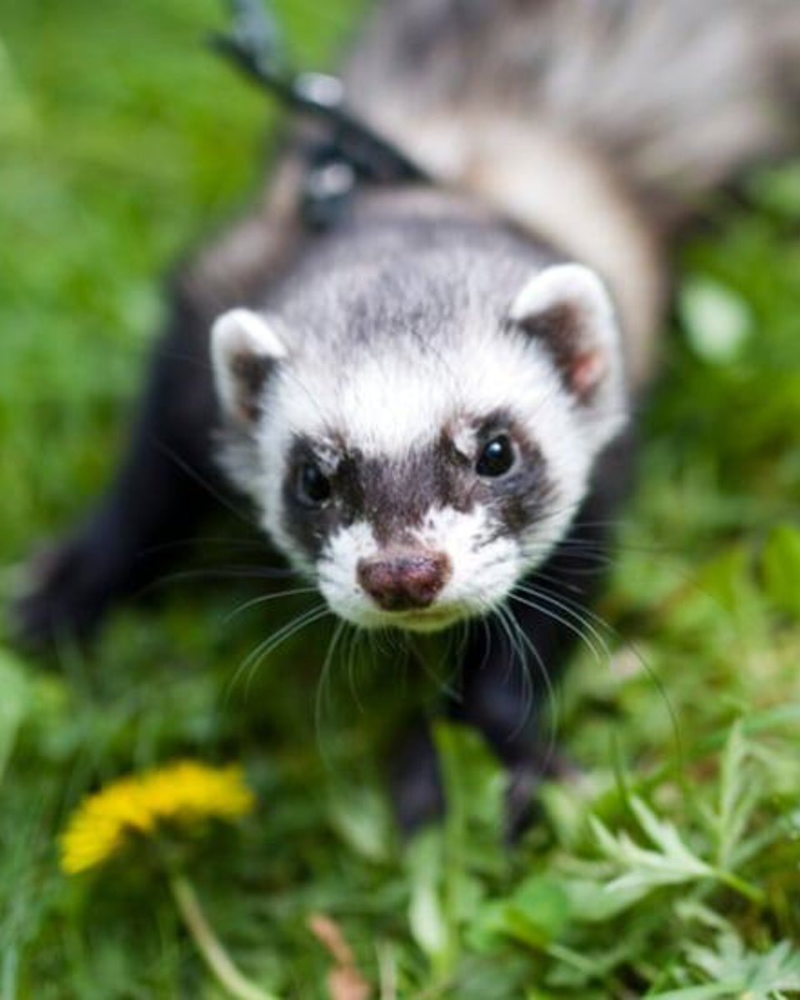
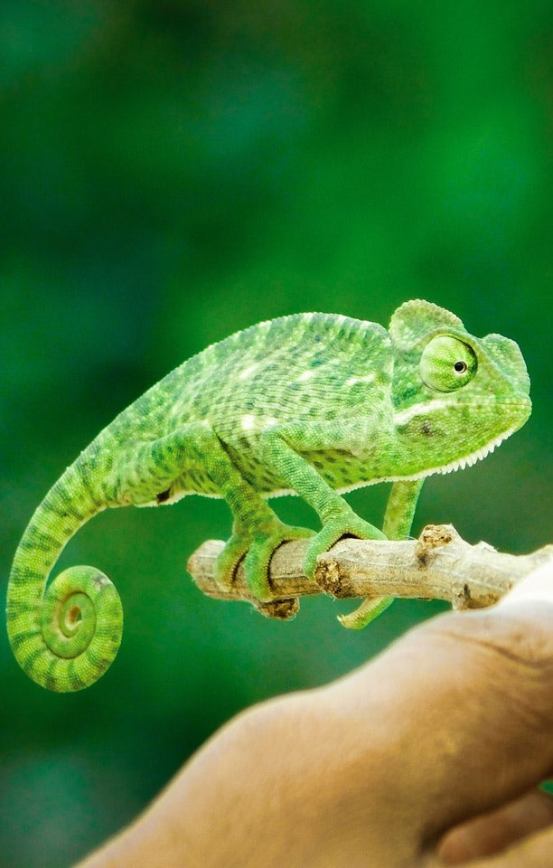
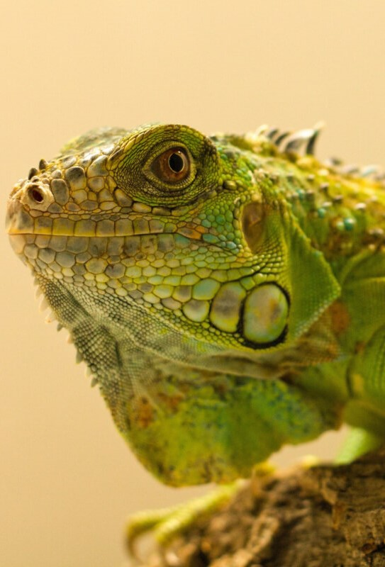
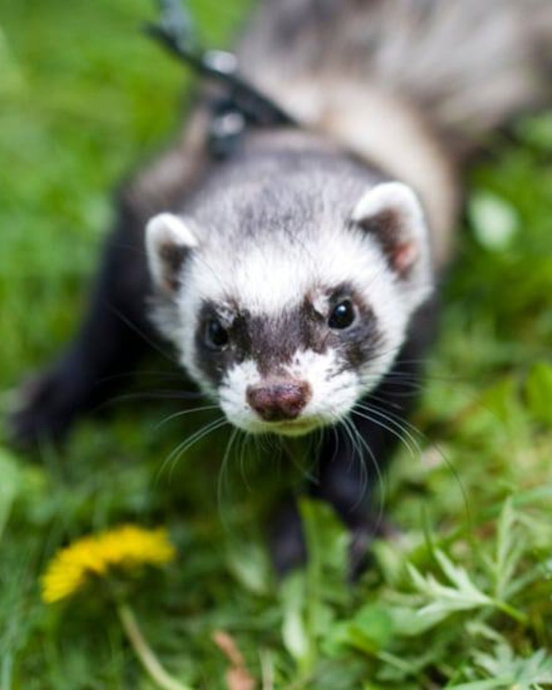
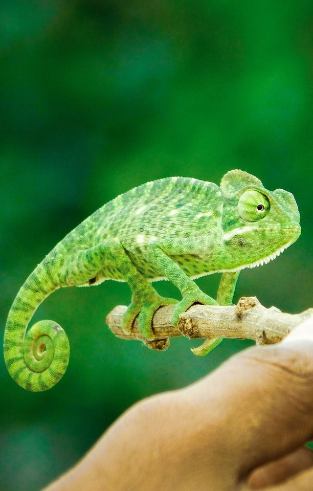
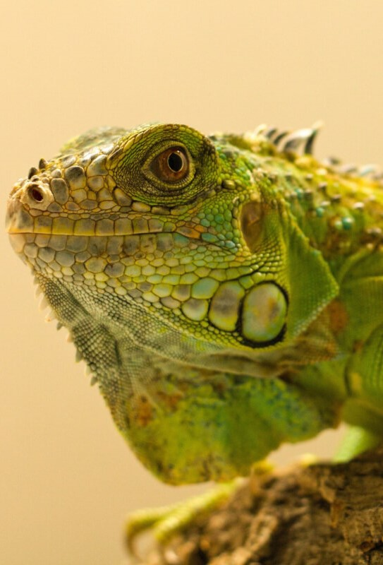

  
   

Bem-vindo(a)!
Aqui no Acervo Animal você encontra todas as informações necessárias para a criação de diversos tipos de animais.
   MAIS PESQUISADOS
 Primatas
Primatas  Ouriços
Ouriços  Cobras
Cobras .jpg) Lagartos
Lagartos .jpg) Papagaios
Papagaios  Chinchilas
Chinchilas